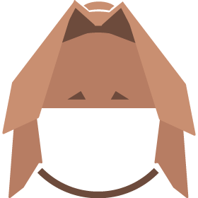
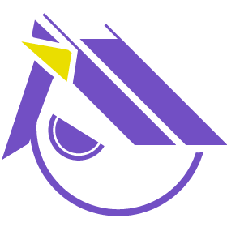

一路上，艾萊亞被折磨的可不清


對渡鴉來說，這簡直是一場災難。
更雪上加霜的是，渡鴉壓根沒料到這傢伙的入職流程會這麼棘手。
照理來說，一般新人頂多到協作分層露個臉，再轉去三號部門做個簡單體檢就完事了。誰知道這個平平無奇的文書職員，居然被高層指示，得把整個公司一半以上的主要分層全部跑過一遍。
光是趕路，兩人在各部門間奔波就耗掉了大半天。
神奇的是，一路上那個叫艾萊亞的女孩笨手笨腳的，卻硬是一聲不吭地咬牙撐了下來。
這讓渡鴉感到有些異樣。這傢伙似乎沒想像中那麼……害怕？
通常，被抓進公司的傢伙分為兩類。
一類是自願加入——雖然大部分是走投無路的「被迫自願」，例如渡鴉自己。
另一類，則是像艾萊亞這樣，因為不可抗力被強制滯留的倒楣鬼。
以往像她這種人，剛進來的第一個月別說正常交談了，基本上天天以淚洗面、滿懷敵意，整天嘗挖洞跑出去。
等到他們終於認清現實、接受命運時，整個人早就瘦了一大圈，連話都說不清。
但這傢伙有點古怪。雖然能從她的眼神深處讀出瀕臨崩潰的恐懼，且膽子小得要命，但到現在現在，她的腳步從未停下來過。
與其說她接受了命運，倒不如說，她在以一種驚人的求生本能，嘗試去適應這裡。
儘管她根本就沒有去適應的理由與目的。
「……媽的，怪咖。」渡鴉低聲咒罵。
「欸？」正蹲在地上穿鞋子的艾萊亞抬起頭，一臉茫然。
渡鴉懶得理她，轉身就走：「別發呆了，走了！還有最後一個地方要去。」
渡鴉向來討厭三號部門，偏偏入職清單上白紙黑字寫著，必須帶新人來此進行入職健檢。
「那個……三號部門是個怎麼樣的地方呢？」艾萊亞快步跟在後頭，怯生生地問。
「啊？怎麼突然問這個？」渡鴉挑起眉。這傢伙剛才去其他分層時，可是一路裝聾作啞的。
「我、我在合約上看見，三號部門是負責……生物相關業務的對吧？」艾萊亞的額角滲出幾滴冷汗：「我、我很怕蟲子，蟑螂什麼的絕對不行……其他動物也是。我連普通的狗都不太敢靠近……」
渡鴉的眉頭瞬間壓得極低。
一方面是她對這個毛病一堆的跟屁蟲感到厭煩；另一方面，則是因為艾萊亞猜對了——三號部門裡，確實塞滿了一堆令人作嘔的鬼東西。
為什麼偏偏是三號部門？這一刻，兩人的心聲竟不約而同地重疊在一起。
氣閘門甫一開啟，一股混合著混凝土潮濕與熱帶雨林植被的狂野氣息便撲面而來。與此同時，一聲嘹亮的驚呼從不遠處的密林中炸開：
「喔喔！渡鴉魔女的詛咒！真是稀客啊，沒想到妳居然會主動來我這裡。」
一個身影興致勃勃地朝她們狂奔而來。艾萊亞只看了一眼，便驚恐地將視線別開。
那人皮膚黝黑，身上披著一件下擺沾滿泥濘的白色實驗袍。荒謬的是，白袍底下空無一物，結實的六塊腹肌在空氣中一覽無遺。他光著腳踩在滿是塵土與砂石的地面上，只穿了一件褲管破爛的牛仔褲。
「哎呀！我最近正想研究妳身上那些鱗羽的反光係數，能拔一片給我看看嗎？拜託？」
「一片三千萬歐元，不二價。」渡鴉冷著臉回應。
「喔，這、這個嘛……」怪人居然認真地摸著下巴沉思起來：「部門這個月的預算應該還夠……如果我多挨高層幾頓罵的話……」
「……你還真的在考慮喔。」
「什、什麼？！難道不夠嗎？你們的價值觀還真是──喔……」
男人的話語戛然而止。他的視線，與縮在渡鴉身後的艾萊亞對上了。
雖然隔著鏡片，但艾萊亞清晰地看見，在四目交接的剎那，對方的瞳孔劇烈放大。
他一個箭步向前，身形宛如一條毒蛇，瞬間來到艾萊亞跟前。
「這可真是……千載難逢的收穫啊……」
透過眼鏡的縫隙，艾萊亞看清了這男人的眼睛——他的瞳孔結構異於常人，泛著某種綠色的冷光。
他貼得極近，近到彼此的呼吸相互交織。一旁的渡鴉早已嫌惡地退開一步，雙手環抱，擺明了要看好戲。
「妳好，艾萊亞。初次見面，妳可以叫我布萊克博士──啊，請放心，我不是什麼壞人，我是公司三號部門的主管。」
但在艾萊亞耳中，這番自我介紹聽起來跟犯罪宣言沒兩樣。
布萊克博士的臉幾乎要貼上她的面頰。艾萊亞全身僵硬，大腦一片空白，像一隻被蛇死死盯住的青蛙，連逃跑的本能都被徹底剝奪。
如果人類有天敵，那大概就是這種感覺吧。
然而，布萊克那雙古怪的眼睛裡並沒有惡意，只有純粹的狂喜，那是種能被稱之為「見獵心喜」的表情。
他微微低下頭，將鼻尖湊近艾萊亞的頸側，深深地嗅了幾下。
「喔……這味道可真是……」
隨後，他終於直起身子，退回一個相對文明的社交距離。艾萊亞這才如夢初醒，抓緊機會大口喘氣，重新找回呼吸的節奏。
「妳的狀況我大致了解了。」布萊克露出一個勝券在握的滿意笑容，那張臉看起來有些欠打：「請容許我冒昧請教一個問題。」
艾萊亞被嚇得不輕，只能機械式地接話：「什、什麼問題？」
布萊克清了清喉嚨，面不改色地大聲發問：「妳的生理期是不是還沒來？」
「欸？」
一旁的渡鴉臉色瞬間黑如鍋底，右手默默摸向了外套內的槍柄。
布萊克卻對周遭凝結的氣氛毫無察覺，繼續滔滔不絕：「根據我剛剛嗅到的荷爾蒙濃度，照理來說，妳應該在四天前就出現子宮內膜剝落的出血現象，但妳現在身上卻──」
「你對一個初次見面的女孩子胡說八道些什麼啊！你這個下流的混帳！！！！」
一聲怒吼驟然炸響。一名戴著眼鏡、綁著捲馬尾的女士踩著凌厲的步伐衝了出來，隨後抬起腳，用尖銳的高跟鞋鞋跟，狠狠地釘在布萊克博士的脊椎骨上。
喀喇──！
一聲令人牙酸的骨骼碎裂聲清晰傳來。艾萊亞甚至懷疑自己看到了對方的脊椎在冒煙。這一腳力道極大，直接將布萊克博士整個人踹飛出去，狼狽地滑行到渡鴉腳邊。
「活該。」渡鴉冷冷地啐了一口，順腳往地上的男人身上重重踩了一下。
「真的很抱歉！這王八蛋總是說些缺乏常識的瘋話，真的非常抱歉！！」
女士連忙對著艾萊亞九十度鞠躬賠罪，那誠懇的態度弄得艾萊亞一愣一愣的。
「我是葛瑞塔，三號部門的副主管。」女士抬起頭，伸手扶了扶快被甩掉的眼鏡：「詳細情況執行長已經提前告知了，請跟我來吧！」
「欸？啊，那個……地上躺著的那位……」艾萊亞指了指地面。
「請不用擔心，布萊克博士的身體結構比一般人硬朗得多，死不了的。」
不不不，他的背都在冒煙了，這真的正常嗎？！艾萊亞用驚恐且疑惑的眼神看著地上那具間歇性抽動的人體。
「總之，請先跟我來，這邊請。」葛瑞塔俐落地轉身，領著她們朝森林深處走去。
艾萊亞望著前方的密林，腳步有些躊躇。渡鴉見狀，狠狠瞪了她一眼，暗示她快點跟上。
無可奈何之下，艾萊亞只能深吸一口氣，硬著頭皮踏入三號部門的腹地。
老實說，這裡的內部構造與外表呈現出極度詭異的矛盾。
明明抬頭是遮天蔽日的原始森林，偶爾能見到未知的飛鳥掠過，耳畔充斥著震耳欲聾的蟲鳴鳥叫；但腳下踩著的，卻是一塊塊鋪設整齊、帶有科幻感的現代水泥地磚。無數穿著整潔實驗袍的研究員行色匆匆，在林木間穿梭忙碌。
這裡的氣溫維持在極度舒適的恆溫狀態，完全沒有熱帶雨林該有的悶熱與潮濕。
艾萊亞注意到，沿途有幾名研究員停下手邊的工作，伸長脖子、用一種近乎審視的目光死死盯著她，但很快又收回視線，繼續擺弄眼前的儀器。
一台台高階電腦、數據機與精密實驗台就這麼大剌剌地擺在泥地與樹叢中央，與頂上的天光共存。
這給人一種難以言喻的荒誕感。與其說是人類把科技搬進了自然，倒不如說，這些冰冷的機械打從一開始就扎根於此，與周遭的藤蔓與樹木一同生長。
「到了，就是這裡。」
葛瑞塔在一棟被粗壯樹根死死包覆的水泥隔間前停下腳步。她拿出員工證刷開了厚重的氣閘門：「請進。」
室內擺放著一台神似磁振造影（MRI）的龐大機器。
精準地說，是「看起來像」而已。整台機器的環形結構被拆解成無數重疊的精密碎片，幾乎將核心完全遮蔽，只留下一個黑漆漆的洞口供人躺入。
「請躺上去，檢測很快就開始。」率先走進室內的葛瑞塔熟練地啟動了儀器。房間內的照明被刻意調得極低，艾萊亞不太明的白為什麼這個無菌室連盞像樣大燈都沒有。
「欸？不、不用更衣嗎？」
「沒事的，只要躺著就好了。來、快點。」
在葛瑞塔半推半就的催促下，艾萊亞有些忐忑地躺上了儀器床板。
怎麼溫溫的？這是她的第一個念頭。
「我會在隔壁觀測室透過廣播跟妳保持聯繫。檢測過程中，請千萬不要移動身體。」
根本不給艾萊亞發問的機會，葛瑞塔便快步踏出房間。沉重的氣閘門轟然關閉，將她隻身一人拋在死寂的密室中。
隨著四周安靜下來，艾萊亞的大腦不由自主地浮現出布萊克剛才那個失禮的提問。
因為平時有請生理假的習慣，她對自己的生理週期瞭若指掌。事實上，被抓進公司的當天，就該是她經期的第一天，她甚至提早墊好了防護墊。
可是，從那天到現在，都已經過去……四天了？她的作息一向規律，經期紊亂這種事在她身上從未發生過，但這次卻平白無故推遲了四天。
「聽得到我的聲音嗎？」葛瑞塔的聲音冷不防從喇叭裡炸開。
「唔哇？！有、有聽到！」艾萊亞被這突如其來的廣播嚇了一跳，連忙回應。
「很好，掃描開始。」
隨著一陣低沉的機械運轉聲響起，艾萊亞驚恐地看見，那些環繞在床板四周的精密圓環居然脫離了底座的銜接處，開始繞著她的身體飛速旋轉。
不止如此，圓環轉動的速度越來越快，最後甚至化為了一道密不透風的銀色殘影。
「那個！這台機器真的沒問題嗎？！」艾萊亞忍不住尖叫。
「只、只是單純的磁力共振！一切指標正常！躺好別動！」
雖然內心依舊驚魂未定，但既然身體沒有出現異狀，艾萊亞也只能將滿腹的疑問死死按捺下去。
大約過了三分鐘，狂暴的圓環才緩緩降速，最終歸於平靜。
「好了，可以起來了。」葛瑞塔推門進來，外頭雨林的蟲鳴聲似乎比剛才更響亮了些。
艾萊亞手腳發軟地從床板上爬了起來。
「檢測確實完成了，不過……」葛瑞塔端詳著剛從儀器端印出來的紙本報告，眉頭緊鎖，臉上寫滿了困惑：「有點奇怪。」
這句話讓艾萊亞的心臟差點跳出喉嚨：「奇怪？！是、是哪裡奇怪？腫瘤？惡性病變？難道是癌症？！這裡公司有健保嗎？！」
「不，妳的各項數值完全正常。」
「欸？」這下輪到艾萊亞傻眼了。
葛瑞塔將報告反覆翻看了兩次，深吸一口氣，用無比確信的語氣回答：「對，一切指標都處於完美狀態，沒有任何受到異常侵蝕或肉體病變的跡象。」
「那妳說的奇怪是指──」
「原來是這麼一回事啊～」
那個吊兒郎當的聲音毫无徵兆地在葛瑞塔身後響起。
「布萊克博士……」
「艾萊亞啊，妳以後有空，多來我們這幫忙吧。」布萊克繞過葛瑞塔，整個人再度湊到艾萊亞面前，笑得一臉燦爛。
「欸？幫忙？」艾萊亞徹底被這兩個人的反應搞糊塗了。
「喂！裡面搞定了沒有啊？！」門外傳來渡鴉不耐煩的宏亮吼聲。
「布萊克博士，執行長給她的行程表上，後面還有其他部門要去報到……」葛瑞塔的語氣不知為何突然變得有些慌亂。
「嗯……這確實有點傷腦筋呢。既然如此，那就這樣辦好了！」布萊克雙手一拍，表情豁然開朗：「那個……電影裡，那句話是怎麼說來著？對了──『我現在以代理 CEO 的權限下達特赦指令』。」
「……我就知道會變這樣。」葛瑞塔深深地嘆了一口氣。她看向艾萊亞的眼神，不知何時多了一抹濃濃的……同情。
「請、請問到底發生什麼事了？」艾萊亞瑟瑟發抖。
「啊哈哈，別擔心。反正妳以後會非常頻繁地來三號部門報到的。」布萊克歡快地側過身，讓出離去的通道：「感謝妳今天的配合，請慢走～」
回去的路上，踩著石磚，艾萊亞終於忍不住發話。
「那個……有件事情我有點在意……」
「說。」
「布萊克博士剛剛說，我以後會很常去三號部門報到……他指的是要我過去協助研究嗎？」
渡鴉猛地停下腳步。她轉過頭，用一種極其複雜且沉重的眼神看著艾萊亞，長長地嘆了一口氣：「三號部門在公司人員和外勤傭兵之間，有一個別名。」
「什麼別名？」
「──他們管那裡叫『安寧病房』。妳最好從現在開始做好心理準備。」